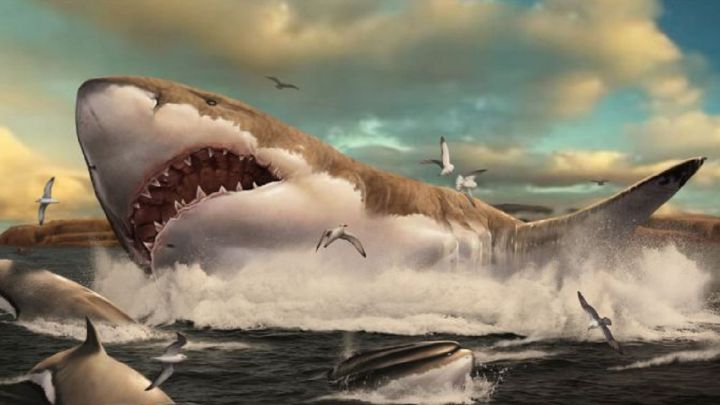

¿Qué son?
Los tiburones son un conjunto de peces cartilaginosos (o sea, sin esqueleto óseo) conocidos popularmente como jaquetones o escualos y científicamente como selaquimorfos o selacimorfos (o sea, pertenecientes al superorden Selachimorfa). Se trata de uno de los animales marinos más populares y temidos por la humanidad, debido a su rol de feroz depredador marino.

EL MEGALODON
Haz click aquí para aprender más sobre tiburones